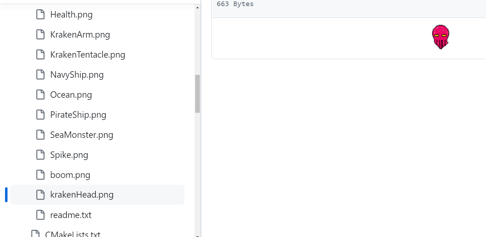
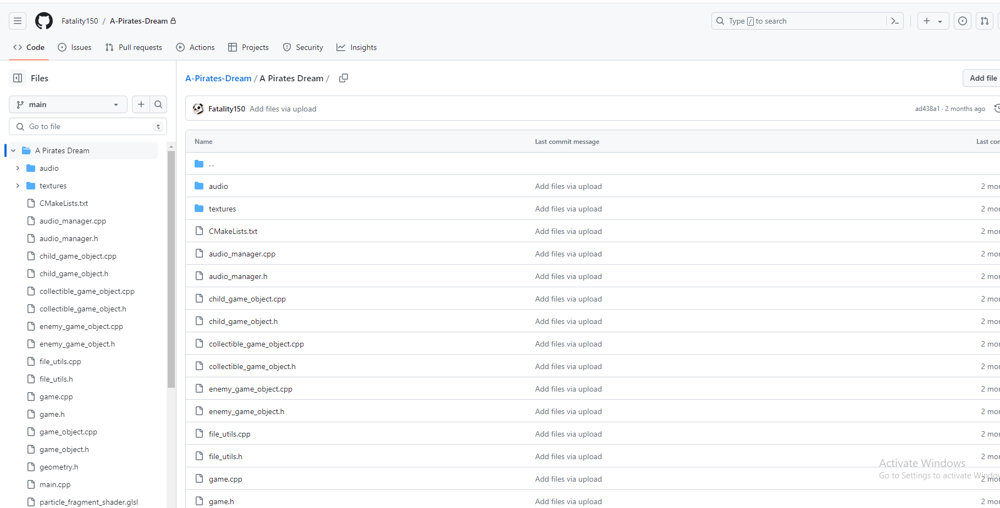

Spring 2024
Game Setting and Fiction
Developed using C++ and OpenGL. Set sail and embark on a thrilling adventure across the sea in "The Pirate's Dream"! Take control of your pirate ship, engage in fierce combat with sea monsters and foes, and conquer the seas to retrieve the greatest treasure of all. Progress through levels, defeat bosses, and upgrade your ship to become the ultimate pirate.

Challenges include battling other pirates and sea monsters. Players must strategically load and fire their cannons to overcome these threats. Motivation comes from defeating enemies, stealing their treasure, and upgrading the ship and weapons. The main goal is to reach the ultimate treasure, "The Pirate's Dream."

Design Requirements
Enemies include sea monsters, navy ships, and the Kraken. Weapons include cannons, TNT barrels, and rams. Power-ups like health boosts, damage boosts, and time manipulation enhance gameplay. Collectibles like gold, apples, and fish provide various benefits.

Implementation Details
The game features enemy AI with state machines, collectible items that grant temporary invincibility, continuous scrolling, and advanced particle effects. The game uses hierarchical transformations for complex enemy behaviors and includes a physical motion-based control system.
Please note that this project was developed with a partner for a school project. It was only released for other students, It is not intended for public release and will not be released.